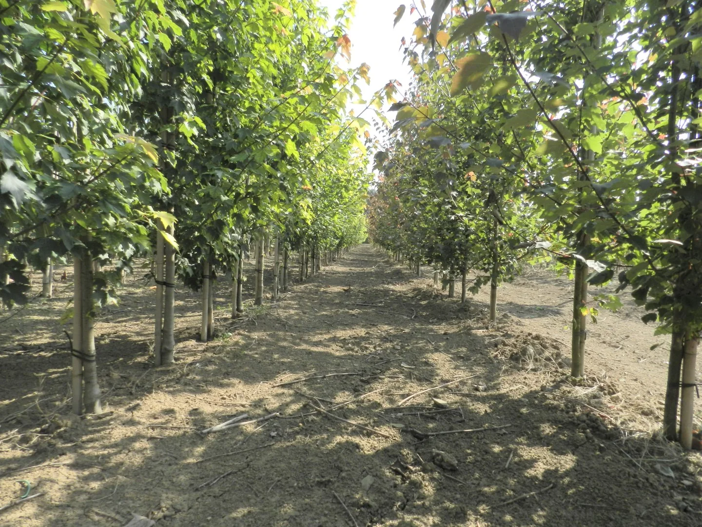
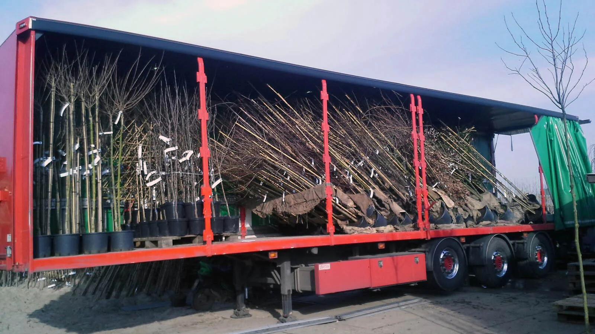
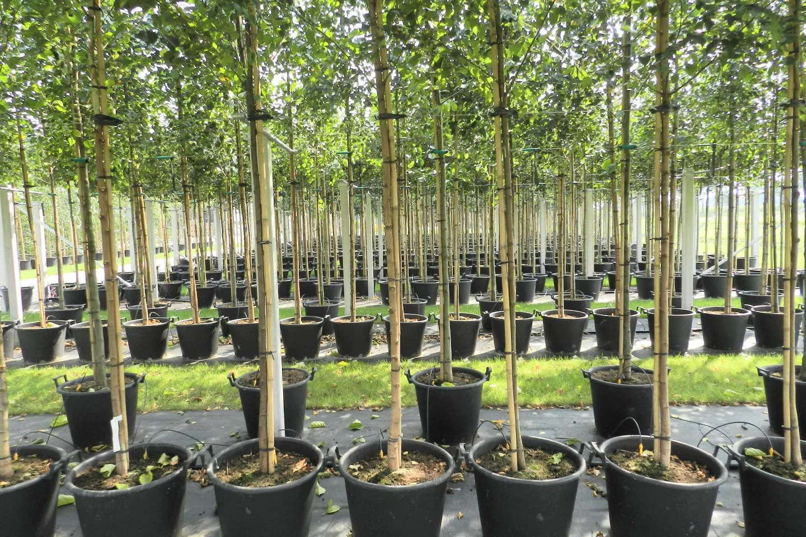

Vollegrondsteelt
Bomen die opgroeien op de kleigrond van de Betuwe. Met zorg gekweekt, van de eerste aanplant tot het rooien.
GEKWEEKT MET AANDACHT
Van vertrouwde laanbomen tot onderscheidende soorten. We kweken met aandacht voor de boom, de bodem en de toekomst.
Vraag naar ons assortiment
ONZE KWEKERIJ
Onze kwekerij ligt in het laanboomcentrum van Nederland, nabij Opheusden. De vruchtbare Betuwse kleigrond vormt de basis voor mooie, gezonde bomen.
We combineren traditionele soorten met een onderscheidend assortiment. Met oog voor het milieu maken we bewuste keuzes in onze teelt.
Bomen die opgroeien op de kleigrond van de Betuwe. Met zorg gekweekt, van de eerste aanplant tot het rooien.
Sinds 2010 kweken we ook bomen in pot. Zo kunnen we een deel van het assortiment het hele jaar leveren, ook in de zomer.
Van traditionele tot minder alledaagse soorten. Informeer naar de actuele beschikbaarheid voor uw beplantingsplan.

TOTAALLEVERANCIER VOOR HOVENIERS
Dankzij de samenwerking met collega-kwekers in de regio bieden we een totaalassortiment voor hoveniers en groenaanleggers. U bespreekt uw wensen met één aanspreekpunt.
Mail uw beplantingslijstOOK IN CONTAINER
Met bomen in container bent u voor een deel van ons assortiment minder afhankelijk van het traditionele leverseizoen. Neem contact op om de mogelijkheden en het juiste levermoment te bespreken.

PERSOONLIJK CONTACT
Vertel ons wat u nodig heeft. We denken graag mee over het assortiment, de werkzaamheden en de planning.
Neem contact op